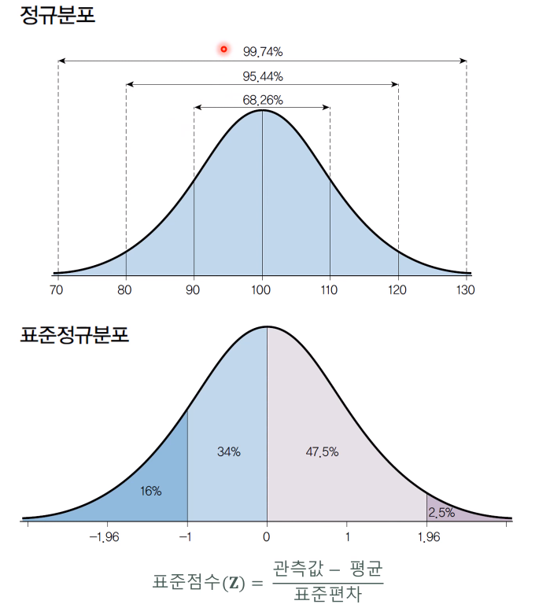

대립가설을 새로운 사실로 받아들이기 위해서는 기존의 주장(귀무가설이)이 명백하게 잘못되었음을 입증해야한다,
그러기 위해 먼저 표본으로부터 우리가 검정하고자 하는 검정통계량을 계산한다. 검정통계량과 그 분포로부터 p-값을 계산하고
그 값이 매우 작으면(유의수준보다 작다면) 귀무가설이 아니라는 강력한 증거로 받아들여지게 되고 귀무가설을 기각한다.
유의확률이란 귀무가설이 사실이라는 가정 하에서 우리가 관측한 통계량과 같거나 그보다 더 극단적인 값이 발생할 확률을 말한다.
유의수준이란 가설 검정을 할 때에 p-값이 충분히 작아 통게적으로 유의한지의 여부를 판단할 수 있는 기준을 말한다.
통계적으로 유의하다는 것은 귀무가설을 기각하고 대립가설을 새로운 사실로 받아들일 수 있다는 것을 말한다.